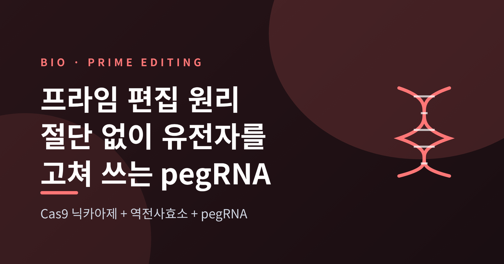
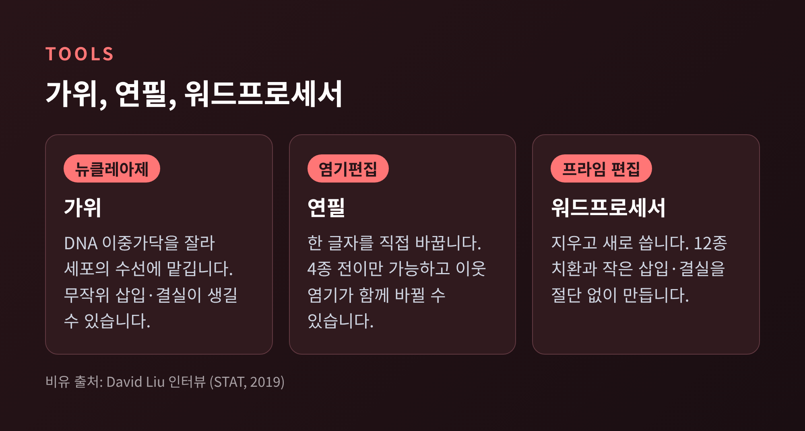
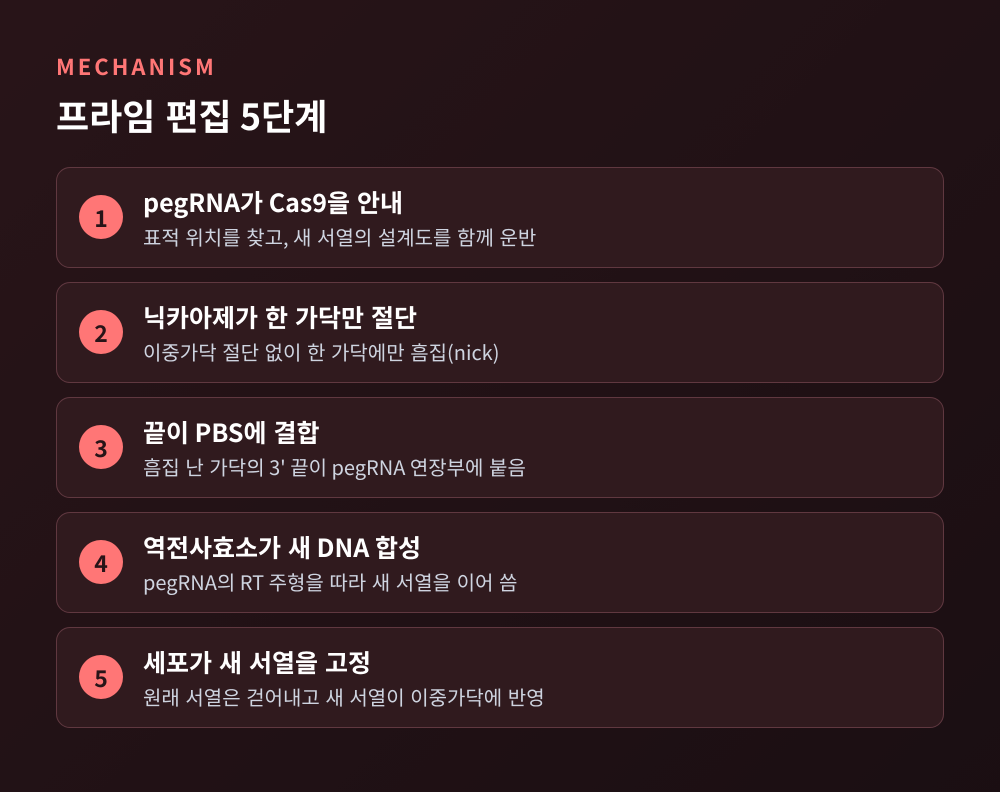
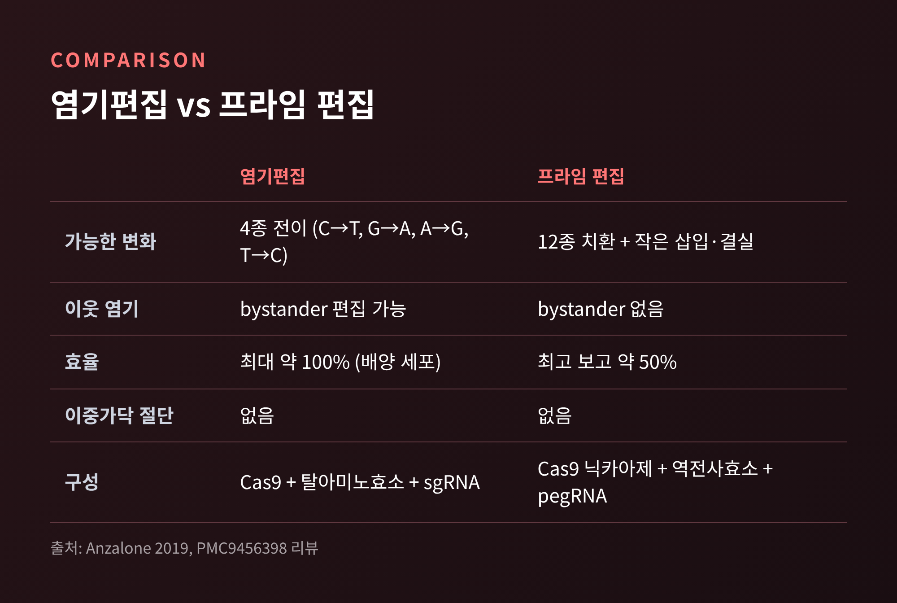
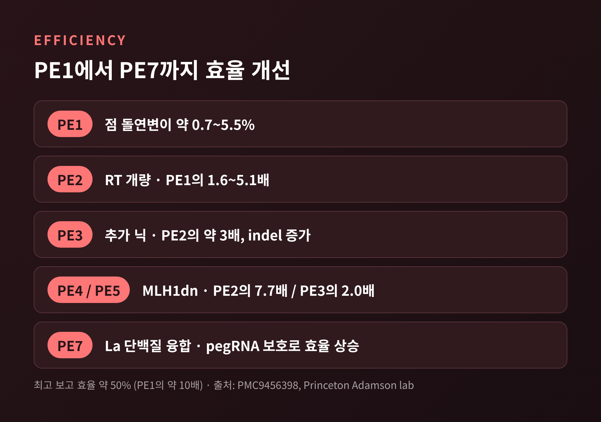
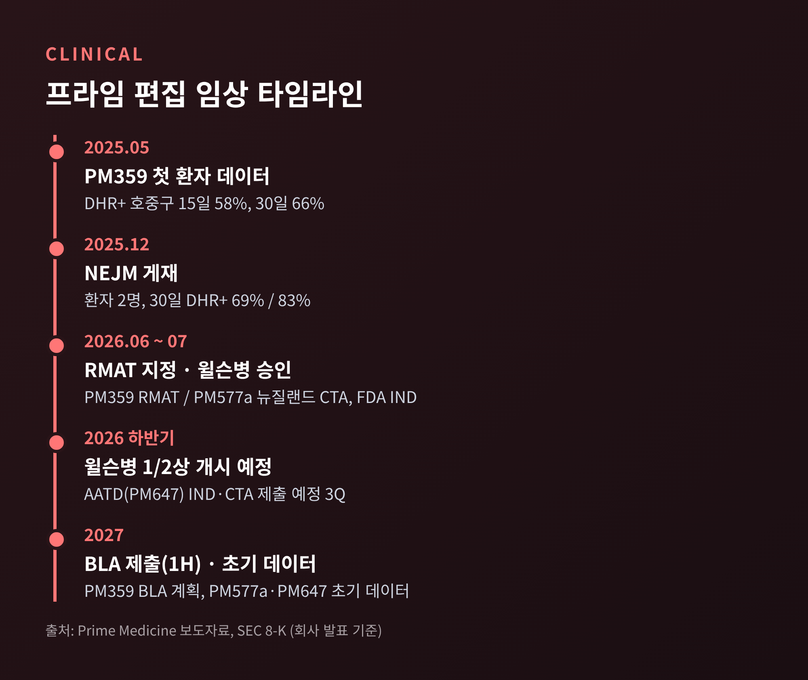

오늘은 프라임 편집(Prime Editing)에 대해 이야기해 보려 합니다. DNA를 자르지 않고 고쳐 쓴다는 이 기술이 어떤 원리로 움직이는지 살펴봅니다. 염기편집과 무엇이 다른지, 효율과 전달체의 한계는 어디까지 왔는지, 임상은 어느 단계인지도 함께 정리하겠습니다.
프라임 편집은 DNA 이중가닥을 끊지 않고 원하는 서열을 직접 써 넣는 유전자 편집 기술입니다. 2019년 브로드 연구소의 데이비드 리우(David Liu) 연구진이 《네이처》에 처음 보고했습니다.
핵심 부품은 두 가지입니다. 하나는 Cas9 닉카아제에 역전사효소를 붙인 융합 단백질입니다. 다른 하나는 pegRNA(prime editing guide RNA)입니다.
리우는 이를 비유로 설명했습니다. 뉴클레아제는 가위, 염기편집기는 연필, 프라임 에디터는 워드프로세서라는 것입니다. 지우고 쓰는 일을 한 번에 하는 도구라는 뜻입니다.

과정을 순서대로 보겠습니다. 아래 설명 중 PBS와 플랩 처리 단계는 제가 아는 일반적인 모델에 따른 것으로, 이번에 1차 논문 본문으로 다시 확인한 내용은 아니라는 점을 밝혀 둡니다.

예전에는 DNA를 자르고 세포의 수선 능력에 기대는 방식이 주류였습니다. 지금은 자르지 않고 설계도를 건네는 방식이 가능해졌습니다. 이중가닥 절단(DSB)에서 흔히 생기는 무작위 삽입·결실(indel)을 줄일 수 있는 이유입니다.
2019년 논문에서 연구진은 사람 세포에서 175개 이상의 편집을 보였습니다. 표적 삽입과 결실, 그리고 12종의 염기 치환을 모두 포함합니다. 겸상적혈구병과 테이-삭스병의 주된 원인 변이를 교정하는 데도 성공했습니다. 알려진 오프타깃 부위에서는 Cas9 뉴클레아제보다 편집이 훨씬 적었습니다.
염기편집도 DSB를 만들지 않습니다. 그래서 두 기술은 자주 비교됩니다. 차이는 '할 수 있는 일의 범위'에 있습니다.

염기편집은 네 종류의 전이(C→T, G→A, A→G, T→C)만 만들 수 있습니다. 대신 배양 세포에서 최대 약 100%에 이르는 효율을 냅니다. 편집 창 안에 이웃한 염기가 있으면 함께 바뀌는 bystander 편집이 생길 수 있다는 점은 아쉽습니다.
프라임 편집은 원리상 12종의 염기 치환 전부와 작은 삽입·결실을 만듭니다. PAM과 편집 위치 사이 거리도 유연하고, 이웃 염기가 덩달아 바뀌는 일이 없습니다. 리우는 이론상 알려진 병원성 변이의 최대 89%를 교정할 수 있다고 추산했습니다. 다만 그는 "89%의 질환을 치료할 수 있다"는 뜻은 아니라고 선을 그었습니다. 변이 하나를 고치는 것만으로 치료가 되지는 않는 경우가 많기 때문입니다.
한계도 분명합니다. 염기편집이 가능한 변화에서는 대체로 염기편집의 효율이 더 높습니다. 리우도 2019년 인터뷰에서, 잘 맞는 위치에서는 염기편집기가 약 두 배 많은 세포를 편집했다고 인정했습니다. 그래서 선택 기준은 단순합니다. 전이 한 글자면 연필, 그 밖의 변화라면 워드프로세서입니다.
초기 프라임 편집기(PE1)의 효율은 좌위에 따라 점 돌연변이 약 0.7~5.5%, 삽입·결실 4~17% 수준이었습니다. 이후 개량이 이어졌습니다.

최고 보고 효율은 약 50%로, PE1의 약 10배입니다. 숫자만 보면 염기편집의 100%에는 못 미칩니다. 그래도 '절단 없이 거의 모든 종류의 변화를 쓴다'는 범용성을 감안하면 의미 있는 진전입니다.
안전성 면에서도 이야기가 있습니다. 알려진 부위의 오프타깃은 Cas9보다 훨씬 적고, indel은 대부분 1% 미만입니다. PE3는 대체로 10% 미만으로 보고됩니다. 다만 전장 유전체 수준에서 발암 가능성이 있는 변이를 얼마나 만드는지는 아직 열린 질문이라고 리뷰 저자들은 적고 있습니다.
효율보다 더 현실적인 장벽은 전달입니다. 프라임 편집기는 덩치가 큽니다. 아데노연관바이러스(AAV)에 실을 수 있는 유전자는 약 4.7 kb까지인데, SpCas9 기반 프라임 편집기는 리뷰 기준 약 6.2 kb, 리우의 초기 언급으로는 약 7,000 bp입니다. 수치는 자료마다 다르지만, 한 개의 AAV에 들어가지 않는다는 점은 같습니다.
해법은 몇 갈래입니다.
솔직히 말해 이 영역은 아직 진행 중입니다. 분할 방식은 효율이 떨어질 수 있고, 조직마다 최적의 전달체가 다릅니다. 리우도 중추신경계 질환에 적용하려면 수년의 전임상이 필요하다고 말했습니다.
가장 앞선 사례는 프라임 메디슨의 PM359입니다. p47phox 결핍 만성육아종병(CGD)을 겨냥한 체외 치료제로, 환자 자신의 조혈모세포를 꺼내 프라임 편집한 뒤 되돌려 주는 방식입니다.
2025년 5월 첫 환자의 호중구 중 DHR 양성 비율은 15일에 58%, 30일에 66%였습니다. 회사가 제시한 임상 이득 최소 기준은 20%입니다. 호중구 생착은 14일, 혈소판 생착은 19일에 확인되었습니다. 2025년 12월 《NEJM》에 실린 환자 2명의 30일 값은 각각 69%와 83%였고, 새로운 CGD 합병증은 없었습니다. PM359와 관련된 임상적으로 의미 있는 이상반응도 보고되지 않았습니다. 환자가 둘뿐이고 추적 기간이 길지 않다는 점은 감안해야 합니다.
2026년 6월 FDA는 PM359에 RMAT 지정을 부여했고, 회사는 2027년 상반기 BLA 제출을 계획하고 있습니다. 윌슨병 후보물질 PM577a는 2026년 6월 뉴질랜드 CTA, 7월 FDA IND 승인을 받았습니다. 2026년 하반기 임상 시작, 2027년 초기 데이터가 목표입니다. 알파-1 항트립신 결핍증 PM647도 2027년 초기 데이터를 내세웁니다. 한편 회사의 현금은 2026년 6월 말 약 1억 880만 달러로 줄어, 운영 자금은 2027년까지로 안내되었습니다. 기술의 전망과 별개로 자금 사정이 변수라는 뜻입니다. 위 임상 내용은 대부분 회사 발표에 근거한 것이라 독립적 검증이 더 필요합니다.

정리하면 이렇습니다. 프라임 편집은 '자르지 않고 고쳐 쓴다'는 발상을 현실의 치료 후보로 옮겨 놓았습니다. 아직 효율은 염기편집에 미치지 못하고, 전달체는 숙제로 남아 있습니다.
"자르는 시대에서 쓰는 시대로." 이 한 줄이 프라임 편집을 가장 짧게 설명합니다.
앞으로 윌슨병과 AATD의 첫 데이터가 나온다면, 이 기술이 실험실의 연필을 넘어 처방전에 오를 수 있을지 가늠해 볼 수 있을 것입니다. 2027년이 기다려지는 이유입니다.